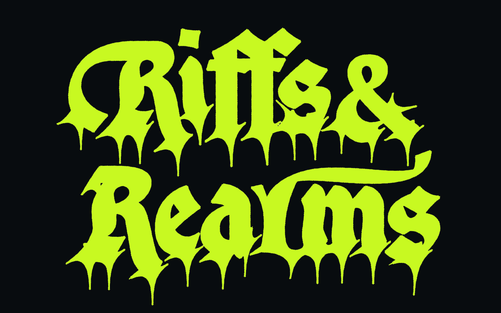
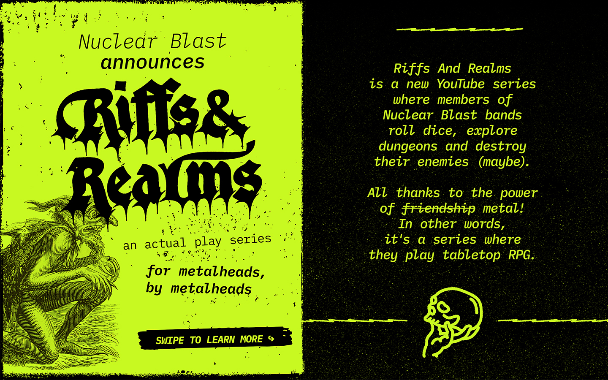
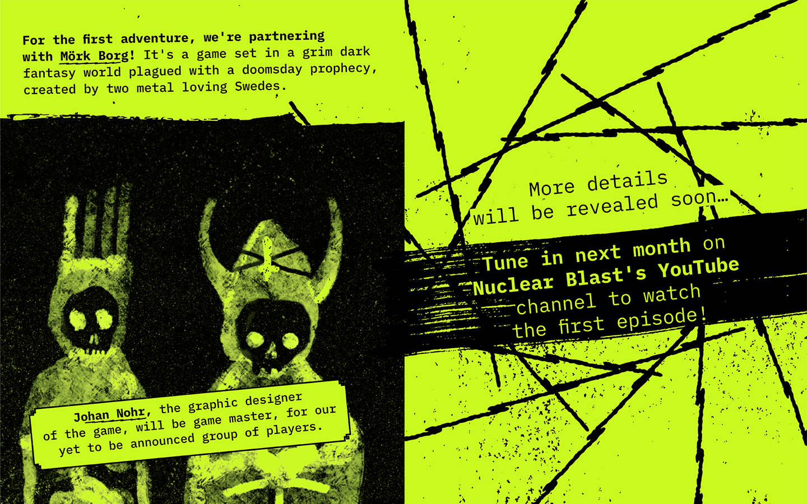

Riffs & Realms
Nuclear Blast
Lettrage & Direction artistique
Jeu de rôle
2026
Création d’un logo titre pour l'actual play de l'émission Riffs & Realms, une collaboration entre Mörk Borg et Nuclear Blast. Mörk Borg est un jeu de rôle sur table inspiré de la musique heavy metal. Il a été créé par les auteurs suédois Pelle Nilsson et Johan Nohr et publié par Free League Publishing en février 2020. Le jeu se distingue par ses thèmes sombres, les morts fréquentes de personnages joueurs et une playlist de doom metal.


